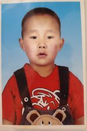
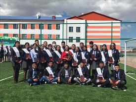

2002 оны 1-р сарын 22-ны өдөр Увс аймгийн Улаангом суманд төрсөн. Айлын бага хүүхэд бөгөөд хоёр ах, нэг эгчтэй.
Багадаа их дүрсгүй хэрнээ танихгүй хүмүүсийн хажууд чимээгүй, томоотой хүүхэд байсан. Улмаар 2004 онд Улаангом
суман дахь 4-р цэцэрлэгт элсэж орсон. ЕБС-д орох хүртлээ энэ цэцэрлэгтээ сурч сургуулийн өмнөх боловсрол эзэмшсэн.
2008 онд Увс аймгийн Улаангом сумын "Алтан гадас" одонт Б.Сайнбуянгийн нэрэмжит Ерөнхий боловсролын 3-дугаар сургуулийн 1а ангид элсэж орсон.

Бага ангиа Б.Мөнгөнтуяа багшийн ангид өнгөрөөсөн ба бага ангидаа сэтгэх чадвар, математик гэх
хичээлүүддээ тун сонирхолтой байсан. Тиймдээ ч ямар нэгэн олимпиад тэмцээнд их орж байсан.
Дунд ангид ороход Л.Гантулга багш дааж авсан бөгөөд дунд ангиасаа хойш англи хэлний хичээлд
түлхүү сонирхолтой болсон. Дунд аниасаа эхлэж сонирхол, хүсэл эрмэлзэл өөрчлөгддөж эхэлсэн.Чөлөөт цагаараа голцуу найзуудтайгаа байдаг, уйдах дургүй. Юмыг судлаж танин мэдэх сонирхолтой бөгөөд Рубик шоо, шатар, даам, сагсан бөмбөг воллейболл гэх мэт төрөл төрлийн спортоор хичээллэж байсан. Математик, англи хэл хичээлээр тус тус ЭЕШ өгсөн.

Монгол улсын их сургуулийн, Хэрэглээний шинжлэх ухаан инженерчлэлийн сургуульд элсэн орсон. Одоогоор Програм хангамж хөтөлбөрийг сонгоод 2-р түвшинд сурч байна.
Мөрдхийг хичээдэг зүйлс: - цаг баримтлах
- нөхөрлөлдөө үнэнч байх
- уйтгар гунигийг мартах
- оролдоод алдах